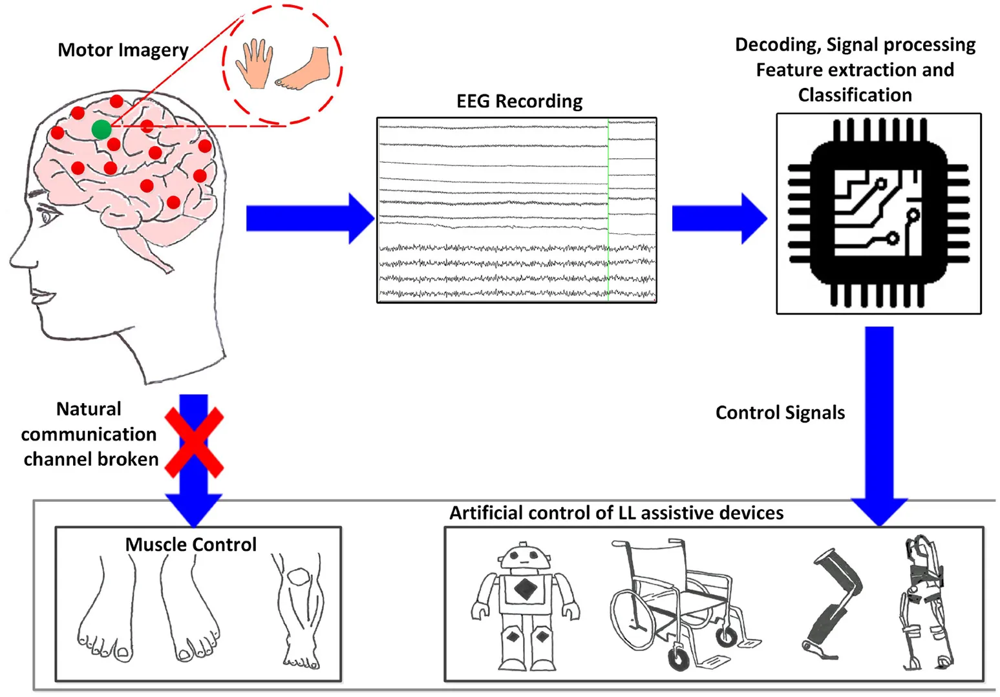

Sadio KANOUTE
Étudiante en première année de BTS SIO
Étudiante en première année de BTS SIO
Dans le cadre de mon BTS SIO, je me suis intéressé à l'évolution des technologies robotiques d'assistance à la personne et des exosquelettes.
Pour répondre à l'exigence d'une innovation technologique en constante évolution, cette veille explore la frontière entre le corps humain et les systèmes d'information. La véritable rupture ne réside plus dans la mécanique, mais dans l'intelligence du pilotage.
Le cœur de ce thème repose sur une innovation majeure : le couplage entre un exosquelette textile et une Interface Cerveau-Machine (BCI) non invasive. On passe d'une machine télécommandée à une machine pilotée directement par l'activité cérébrale.
Ce thème s'articule autour d'une chaîne de traitement informatique précise en 3 étapes :
Pour dépasser les limites des capteurs de mouvements actuels (qui réagissent après le début de l'action physique), la véritable innovation de rupture réside dans la suppression totale de l'actionnement musculaire initial. La machine s'interface directement avec le système nerveux central.

remontez vers le haut